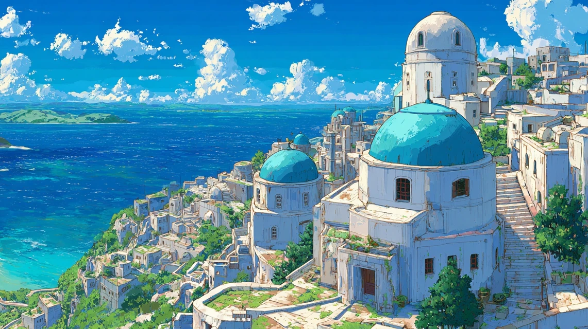
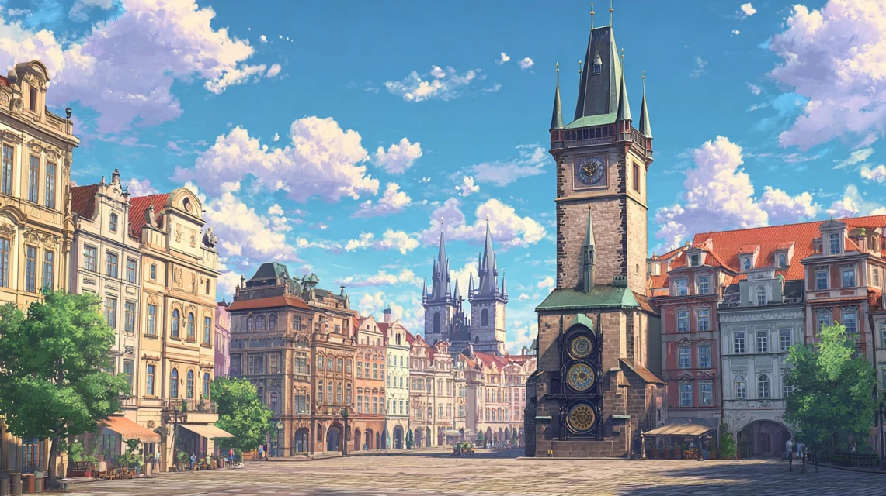
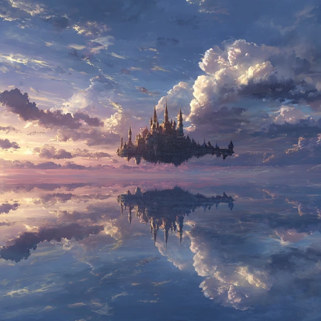
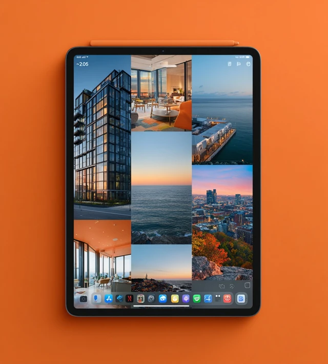
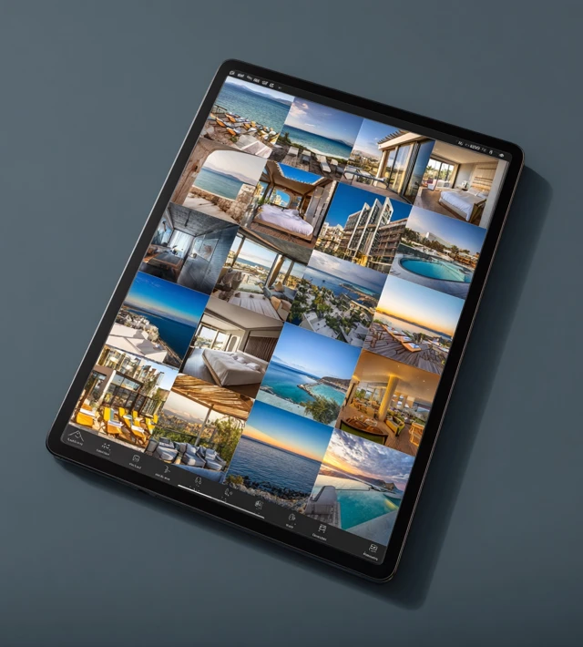
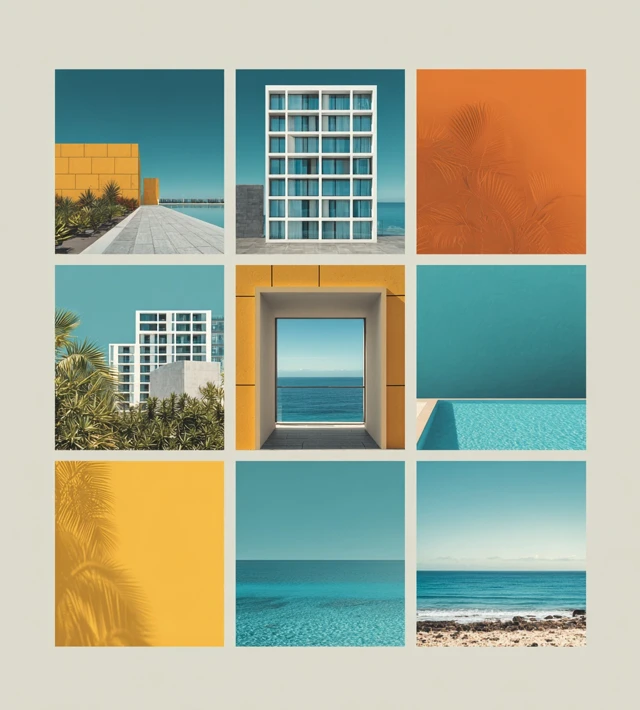
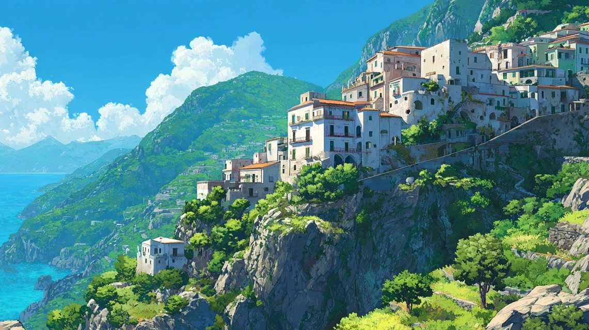

01
Greece
Santorini
Cyclades Islands · Aegean Sea
Iconic white-washed cubist buildings cascade down volcanic cliffs, their cobalt-blue domes glowing against one of the world's most celebrated sunsets.
A journey through the world's most breathtaking places

Iconic white-washed cubist buildings cascade down volcanic cliffs, their cobalt-blue domes glowing against one of the world's most celebrated sunsets.

A city where ancient tradition breathes through every stone lantern and moss-covered temple. Cherry blossoms frame vermillion torii gates in timeless beauty.

The iron lattice of the Eiffel Tower rises above Haussmann's grand boulevards. Every café, every bridge over the Seine whispers of art and romance.

A floating city of impossible beauty — gondolas glide through turquoise canals beneath Gothic palaces, and every alley leads to a hidden piazza.

A skyline that defines human ambition — gleaming towers rise above Central Park's green canopy, the Hudson shimmering in morning light below.

Medieval limestone walls encircle terracotta rooftops perched above the crystal-clear Adriatic. Walking its ramparts at dusk is pure enchantment.

Gothic spires pierce the sky above a fairy-tale cityscape. The astronomical clock chimes each hour as the Charles Bridge spans the emerald Vltava.

Pastel-coloured villages cling to dramatic limestone cliffs above the impossibly blue Tyrrhenian Sea — lemon groves and bougainvillea scent the sea air.
Emerging from morning mist above the Sacred Valley, this ancient Inca citadel speaks of a civilization in perfect harmony with the mountains.
Where neon and tradition collide — Shibuya's scramble crossing pulses with energy as Mount Fuji watches silently over the world's largest metropolis.